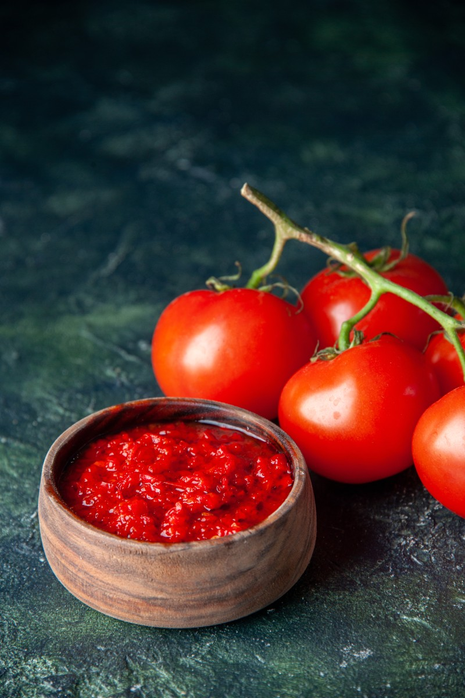

Home
Marinara

A quick note. Pre made marinara is cheap and readily available. And we tend to do what any other busy person would do. Buy it., However, know that you can get a far superior marinara in about 40 minutes. Also, the simpler a recipe is, the more the ingredients show, and in this case the ingredients drive what you get.
Ingredients
- 2 16 oz cans of peeled whole tomatoes
- 2 garlic cloves
- Quality parmesan
- Quality olive oil. Olive oil loses flavor as it ages. If no date is shown on the bottle there's no way of knowing. Get a bottle that is as young as makes sense based what is available from the store and is in your budget.
- Fresh basil
- Salt
Instructions
- Blend the peeled whole tomatoes and set aside
- Grate about 1/2 C of parmesan
- Slice the garlic into the thinnest slices you can do safely
- Pour enough olive oil to cover bottom of pot
- Put garlic and a few basil leaves in the pot
- Turn stove on medium heat. Keep a close eye (and nose) on the garlic
- When the garlic starts to smell cooked and turn tan pour the blended tomatoes into the pot
- Turn the heat all the way up
- Once the tomatoe sauce is boiling adjust the temperature so that it continues to bubble heavily
- Add salt and parmesan to taste.
- Continue boiling sauce until the oil is absorbed and it no longer smells and tastes like fresh tomatoes
- If needed add a pinch of sugar (it should not tast sweet, just richer) and lemon juice (again, you should not taste lemon, just the sauce will be a bit brighter)
Notes
This recipe is more of a guide, a basis for you to build on. Some versions add onion or butter. The most important thing is to taste and smell as you go. The second most important thing is to use quality ingredients. Do those two things and you will have a sauce that is more delicious and healthy than anything you will buy in the store. Also, I scaled this down for a single serving. For my purposes I use a big pot and 5 or 6 cans of tomatoes. You can adjust the cans, garlic, parmesan etc to your needs and taste. Enjoy!
Home